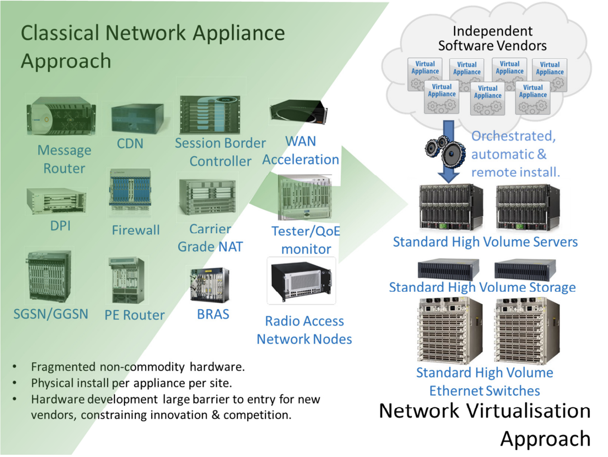

Definição
O que é NFV, quais seus objetivos e quais conceitos a definem.
O que é NFV
NFV é um movimento de virtualizar as funções de rede que antes eram feitas em equipamentos de hardware dedicado. De certa forma, é a lógica da computação em nuvem aplicada às redes de computadores.

Objetivos
-
Virtualizar funções de rede
Executar em software as mesmas funções que um middlebox ℹ️ Middlebox é um dispositivo de rede intermediário, como firewall, roteador ou servidor DHCP. realizaria, sem depender de um equipamento dedicado.
-
Desacoplar a função do hardware
Separar a lógica de operação das funções de rede do hardware subjacente, permitindo que elas rodem em servidores comuns, de qualquer fabricante.
-
Tornar o gerenciamento eficiente, flexível e automatizado
Com a virtualização, os recursos usados podem ser aumentados ou reduzidos conforme a demanda, e novos serviços podem ser provisionados sem instalar equipamentos físicos.
Conceitos de base
Os conceitos de base para a NFV são todos derivados da computação em nuvem e virtualização — especificamente o uso de hypervisors, switches Ethernet virtuais, NICs Ethernet inteligentes e drivers Ethernet poll-mode. Além disso, são necessárias APIs abertas para a integração com a infraestrutura de nuvem.
-
Hypervisor
Um software que possibilita que várias máquinas virtuais sejam executadas em um único computador. Dessa maneira, um mesmo servidor físico pode rodar diversas funções de rede de forma simultânea e eficiente, desde que o hypervisor gerencie o compartilhamento dos recursos físicos de computação corretamente.
-
Switches de Ethernet virtuais
Software que opera junto ao hypervisor para conectar o tráfego das diversas máquinas virtuais entre si e com as interfaces físicas da rede Ethernet (e, porventura, à internet).
-
NICs de Ethernet inteligentes
Placa de rede que, além de permitir a conexão à rede Ethernet, realiza processamento embutido (como compartilhamento de carga), reduzindo a sobrecarga no processador principal (CPU). É essencial para o alto desempenho em redes de datacenters.
-
Poll-mode Ethernet drivers
Drivers e APIs que operam consultando constantemente a placa de rede em busca de novos pacotes (polling), em vez de aguardar por interrupções do sistema. Isso mantém o núcleo da CPU dedicado a verificar as filas do dispositivo sem parar, acelerando drasticamente o processamento de pacotes.
Exemplos de funções de rede virtualizadas
São diversas as funções de rede que podem ser virtualizadas, as mais comuns são:
-
Firewall
Sistema que monitora e controla tudo o que passa na rede seguindo um conjunto de regras pré-estabelecidas para aumentar a segurança da rede.
-
DHCP
Sistema que atribui endereços IP de maneira dinâmica.
-
Balanceador de carga
Distribui o tráfego da rede entre vários servidores para evitar sobrecargas e lentidão.
-
Roteador
Recebe e envia pacotes dentro de uma rede.